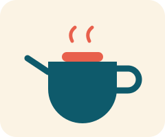

How It Works

Ordering is easy. Walk up to the cart, choose one of the four winds, and tell us your pick. We pour it over ice while you wait, which takes about a minute. You can pay with cash or a card.
How we brew
Every morning we brew each tea in a small batch, using loose leaves and fresh ingredients like citrus, mint, and ginger. The tea is cooled slowly, then kept cold in insulated jugs on the cart so it stays fresh through the day.
Ordering ahead
For groups of six or more, ask about a pitcher at the cart the day before and we will have it ready. We also keep a few reusable cups behind the counter, so you can bring yours back for a small discount.